Cyclistic bike-share analysis
(Microsoft Power BI)
A bike-share program that features more than 5,800 bicycles and 600 docking stations.
Cyclistic sets itself apart by also offering reclining bikes, hand tricycles, and cargo
bikes, making bike-share more inclusive to people with disabilities and riders
who can't use a standard two-wheeled bike.

Ask
Three questions will guide the future marketing program:- How do annual members and casual riders use Cyclistic bikes differently?
- Why would casual riders buy Cyclistic annual memberships?
- How can Cyclistic use digital media to influence casual riders to become members?
Business Task
Analyze historical data to determine how annual and casual riders use Cyclistic bikes differently.
Key Stakeholders:
- Lily Moreno: The director of marketing and your manager. Moreno is responsible for the development of campaigns and initiatives to promote the bike-share program. These may include email, social media, and other channels.
- Cyclistic marketing analytics team: A team of data analysts who are responsible for collecting, analyzing, and reporting data that helps guide Cyclistic marketing strategy.
- Cyclistic executive team: The notoriously detail-oriented executive team will decide whether to approve the recommended marketing program.
Prepare
Dataset source:This is public data that you can use to explore how different customer types are using Cyclistic bikes. But note that data-privacy issues prohibit you from using riders’ personally identifiable information. This means that you won’t be able to connect pass purchases to credit card numbers to determine if casual riders live in the Cyclistic service area or if they have purchased multiple single passes. Link to Data Source
Lisence:
The data has been made available by Motivate International Inc. under this license: Link to Lisence
Size of data:
rows: 5 779 438; columns: 13
Organization data
year month-divvy-tripdata.zip
Metadata:
- ride_id Primary Key String Not Null
- rideable_type String enum ("electric_bike", "classic_bike", "docked_bike") Not Null
- start_station_id String Nullable start station id
- start_station_name String Nullable start station name
- started_at Timestamp Not Null start date and time
- start_lat Float Nullable trip start latitude
- start_lng Float Nullable trip start longitude
- end_station_id String Nullable end station id
- end_station_name String Nullable end station name
- ended_at Timestamp Not Null end date and time
- end_lat Float Nullable end latitude
- end_lng Float Nullable end longitude
- member_casual String enum("casual", "member") Not Null
| № | Year | Month | Rows |
|---|---|---|---|
| 1 | 2022 | July | 823 487 |
| 2 | 2022 | August | 785 931 |
| 3 | 2022 | September | 701 338 |
| 4 | 2022 | October | 558 684 |
| 5 | 2022 | November | 337 735 |
| 6 | 2022 | December | 181 806 |
| 7 | 2023 | January | 190 301 |
| 8 | 2023 | February | 190 445 |
| 9 | 2023 | March | 258 678 |
| 10 | 2023 | April | 426 590 |
| 11 | 2023 | May | 604 826 |
| 12 | 2023 | June | 719 617 |
select year, month, rows
from
(
select extract(year from started_at) year, extract(month from started_at) month, count(1) rows
from `healthy-battery-390020.Cyclistic.cycle_trip_data`
group by extract(year from started_at),extract(month from started_at)
)
order by year, month;
Data ROCCC:
- Reliability. The data has been made available by Motivate International Inc. under this license Link to Lisence.
It can be used to explore how different customer types are using Cyclistic bikes. - Originality. The dataset is a first party source.
- Comprehensiveness. For the purposes of this case study, the dataset is appropriate and will enable you to answer the business questions.
- Current. Dataset contains information for the last 12 months.
- Cited. The Google Data Analytics certification cites the Cyclistic bikes dataset.
Process
- Downloaded the previous 12 months of Cyclistic trip data Link to Data Source
- Installed an extension for Chrome DownThemAll!
Uploaded:
202207-divvy-tripdata.zip
202208-divvy-tripdata.zip
202209-divvy-tripdata.zip
202210-divvy-tripdata.zip
202211-divvy-tripdata.zip
202212-divvy-tripdata.zip
202301-divvy-tripdata.zip
202302-divvy-tripdata.zip
202303-divvy-tripdata.zip
202304-divvy-tripdata.zip
202305-divvy-tripdata.zip
202306-divvy-tripdata.zip - Created "csv" subfolder for the .csv file and uploaded into Microsoft Power BI
Home > New Source > Folder > Create Table "FACT_CYCLISIC"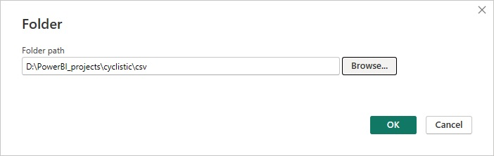
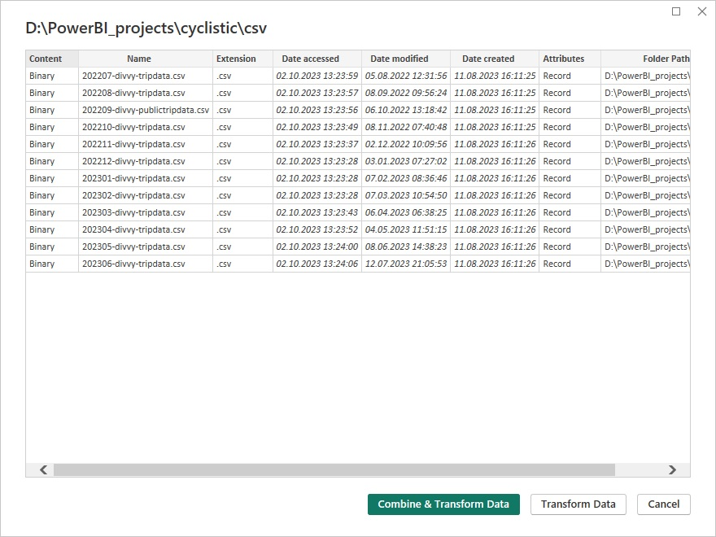
- What tools are you choosing and why?
I used Microsoft Power BI because it is a popular BI tool that provides the ability to transform and visualize a large amount of data. - Clean Data:
- Checked data for duplicates:
select ride_id from `healthy-battery-390020.Cyclistic.cycle_trip_data` group by ride_id having count(ride_id) > 1; - Excluded from analyze values where started_at = ended_at
select count(1) from `healthy-battery-390020.Cyclistic.cycle_trip_data` where started_at = ended_at; - Swaped started_at and ended_at in case started_at > ended_at
select count(1) from `healthy-battery-390020.Cyclistic.cycle_trip_data` where started_at > ended_at; - Cleared asterisk in the end start_station_name and end_station_name
select count(1) from `healthy-battery-390020.Cyclistic.cycle_trip_data` where start_station_name like "%*" or end_station_name like "%*"; - Checked error coordinates (these coordinates not available in Chicago)
select count(1) from `healthy-battery-390020.Cyclistic.cycle_trip_data` where start_lng=start_lat and end_lng = end_lat; select count(1) from `healthy-battery-390020.Cyclistic.cycle_trip_data` where round(start_lat)= round(start_lng) and round(end_lat)= round(end_lng); - Excluded from analyze values
[Start Station Name] <> "DIVVY CASSETTE REPAIR MOBILE STATION" and [Start Station Name] <> "OH Charging Stx - Test" and [Start Station Name] <> "646" and [End Station Name] <> "DIVVY CASSETTE REPAIR MOBILE STATION" and [End Station Name] <> "OH Charging Stx - Test" and not Text.EndsWith([Start Station Name], "*") and not Text.EndsWith([End Station Name], "*")
- Checked data for duplicates:
- Changed Types:
Column Name Original Type New Type Started at text datetime Ended at text datetime Start Lat text number Start Lng text number End Lat text number End Lng text number - Added Calculated Columns:
Column Name Type Description Day date Extract from "Started at" date without time;
Join Column for Calculated "DIMM_Date" TableTime to the Minute time Extract from "Started at" time without seconds;
Join Column for Calculated "DIMM_Time" TableDuration of ride (min) minute Calculate subtraction between "Ended at" and "Ended at" in minutes
Number.Round(Duration.TotalMinutes([ended_at] - [started_at]), 2)) - Added Calculated Tables:
DIMM_Time {0..1439}
DIMM_Date [07/01/2022; 06/30/2023]Column Name Column Type Minute number Time to the Minute time 5 min bucket number 10 min bucket number 1 hour bucket number 5 min time slot time 10 min time slot time 1 hour time slot time Hour number Time of Day text enum{night/morning/afternoon/evening} Column Name Column Type Day date Day Name text {Sunday, Monday, ect} Day of Week number {0,...,6} Quarter Num number {1,...,4} Quarter text {Qrt1, Qrt2,Qrt3, Qrt4} Month text {January, February,...} Month Num number (1,.. 12) Year number - Removed rows with empty "Start Station Name" and "End Station Name"
- Trimmed text fields in the "FACT_Cyclistic" Table
Model View:
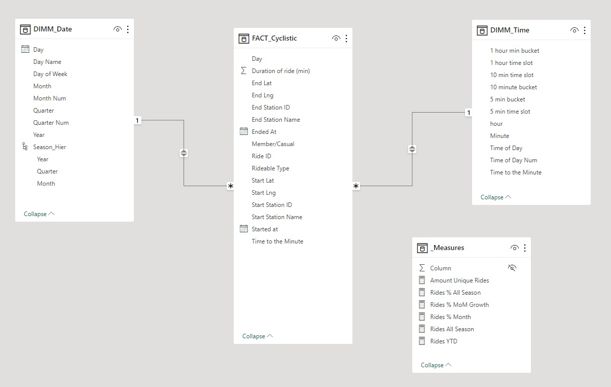
Measures:
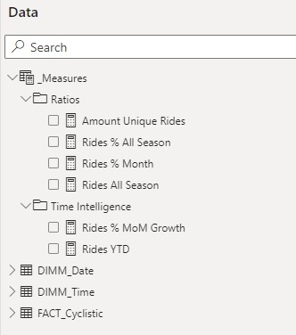
Amount Unique Rides = DISTINCTCOUNT(FACT_Cyclistic[Ride ID])
Rides % All Season = DIVIDE(
DISTINCTCOUNT(FACT_Cyclistic[Ride ID]),
CALCULATE(
DISTINCTCOUNT(FACT_Cyclistic[Ride ID]),
REMOVEFILTERS(FACT_Cyclistic)
)
)
Rides % Month = IF(
ISINSCOPE(DIMM_Date[Quarter]),
DIVIDE(
[Amount Unique Rides],
CALCULATE(
[Amount Unique Rides],
REMOVEFILTERS(DIMM_Date[Month], DIMM_Date[Month Num])
)
)
)
Rides All Season = CALCULATE(
DISTINCTCOUNT(FACT_Cyclistic[Ride ID]),
REMOVEFILTERS(DIMM_Date[Month])
)
Rides % MoM Growth =
VAR RidesPriorMonth = CALCULATE( [Amount Unique Rides],
PARALLELPERIOD('DIMM_Date'[Day], -1, MONTH )
)
VAR RidesGrowthMonth = IF(
ISINSCOPE(DIMM_Date[Month]),
DIVIDE(
([Amount Unique Rides] - RidesPriorMonth),
RidesPriorMonth
)
)
RETURN RidesGrowthMonth
Rides YTD = IF(
ISINSCOPE(DIMM_Date[Quarter])||ISINSCOPE(DIMM_Date[Month]),
TOTALYTD(
[Amount Unique Rides],
DIMM_Date[Day],
"06-30"
)
)
Analyze
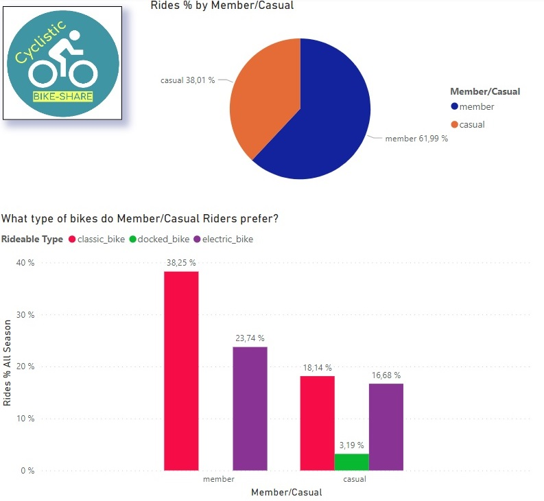
Member customers made up 62% of all rides, while Casual customers accounted for the remaining 38%.
Among Members, 38.25% preferred classic bikes and 23.74% preferred electric bikes. For Casual customers, 18.14% chose classic bikes, 16.68% preferred electric bikes, and 3.19% opted for docked bikes. It's important to note that Members did not use docked bikes at all.
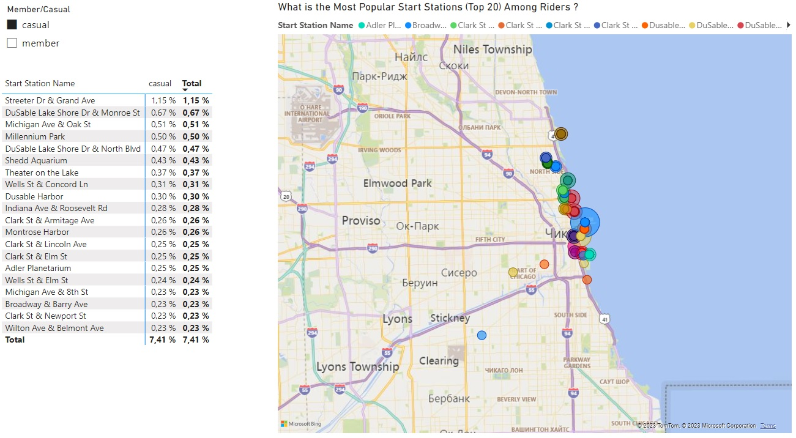
The most popular start station among Casual Riders is "Streeter Dr & Grand Ave", accounting for 1.15% of Casual Rides. Casual Riders tend to prefer rides along the Chicago Lakefront Trail.
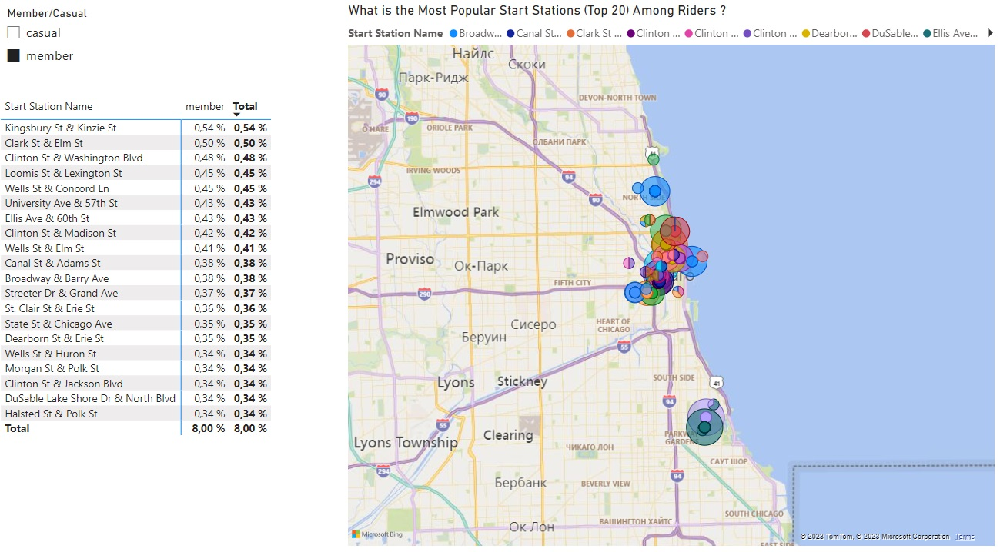
The most popular start station among Member Riders is 'Kingsbury St & Kinzie St,' accounting for 0.54% of Member Rides. Member Riders don't have as strong a trend as Casual Riders.
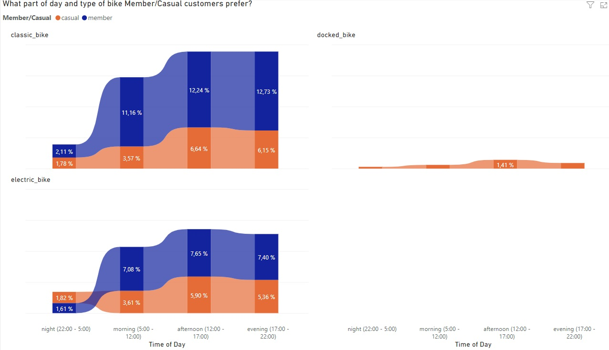
Casual customers ride more than member customers during the night (22:00 - 5:00) on the electric bikes; in other cases, member customers ride more.
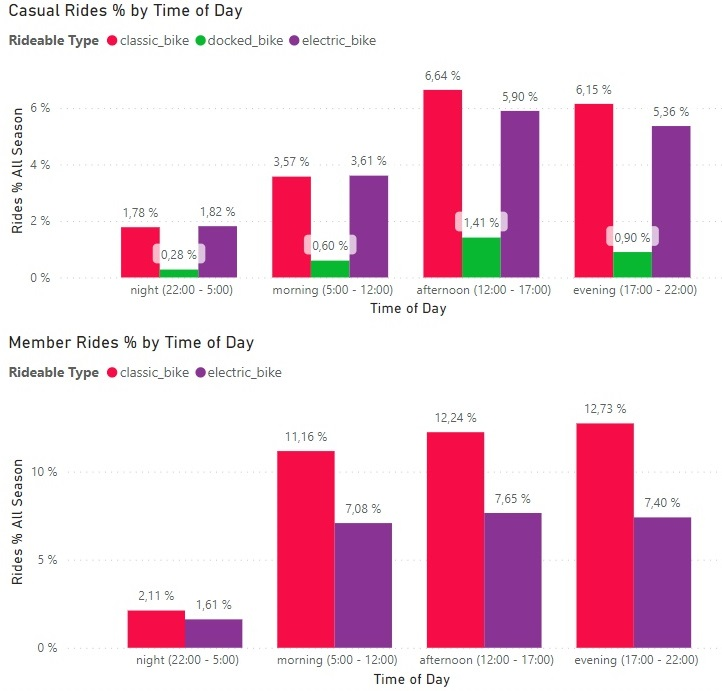
Classic and electric bikes are almost equally popular among casual riders during the night (22:00 - 5:00) and morning (5:00 - 12:00). However, in the afternoon, casual riders use classic bikes slightly more than electric bikes, with a difference of 0.74%, and in the evening, the difference is 0.79%.
Member riders prefer to use classic bikes during the morning(5:00 - 12:00), afternoon(12:00 - 17:00), and evening(17:00 - 12:00). During the night (22:00 - 5:00), member riders use classic bikes more than electric bikes, with only a 0.5% difference in favor of classic bikes.
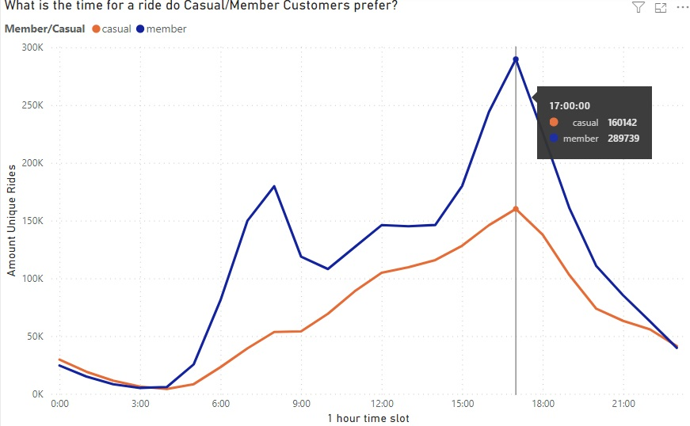
Member rides have two peaks on the graph at 8:00 and 17:00. It appears that they use classic bikes for their daily commute to and from work.
Casual Riders have only one peak value at 17:00.
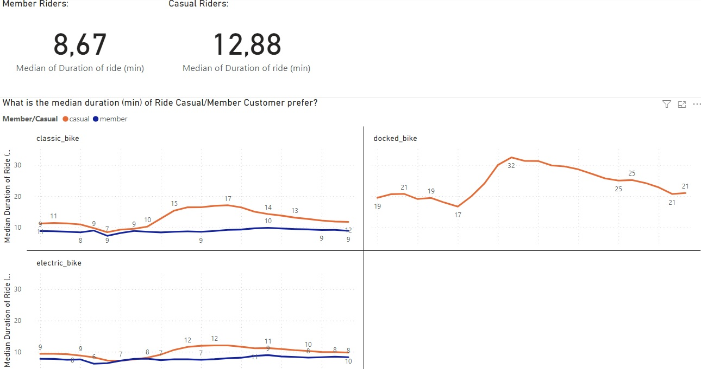
The median duration is 12.88 minutes for casual customers and 8.67 minutes for member customers. In general, the median duration of rides for casual customers is higher than that for members, especially between 9:00 and 15:00.
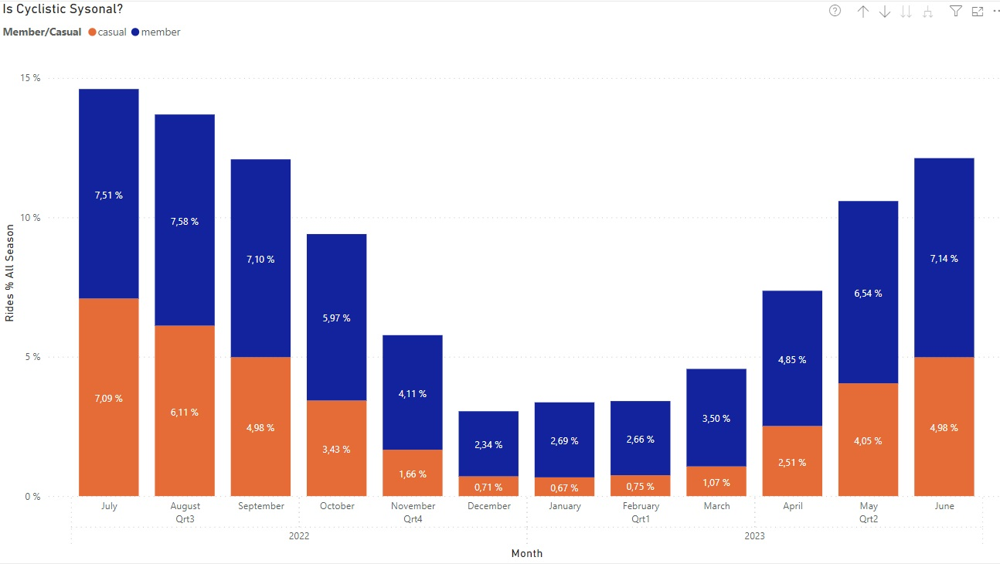
Cyclistic is a seasonal service. Warm months, especially summer months, are popular among Member and Casual riders. July leads in ridership for Casual Riders, and August leads for Member Riders.
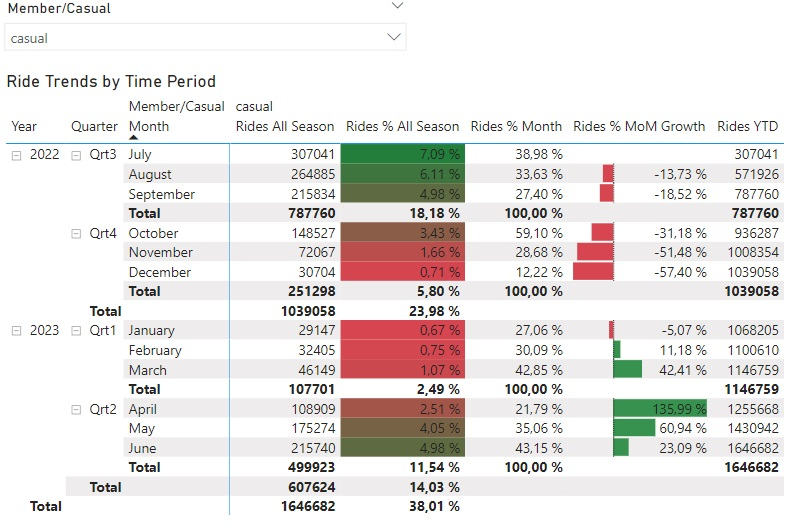
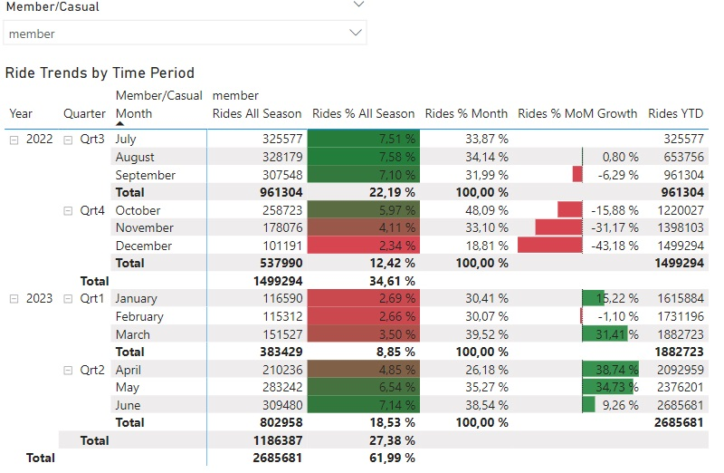
In April, Casual Riders experienced a 136% growth, while Member Riders had a 38.74% growth in the number of rides, making it the largest growth in April.
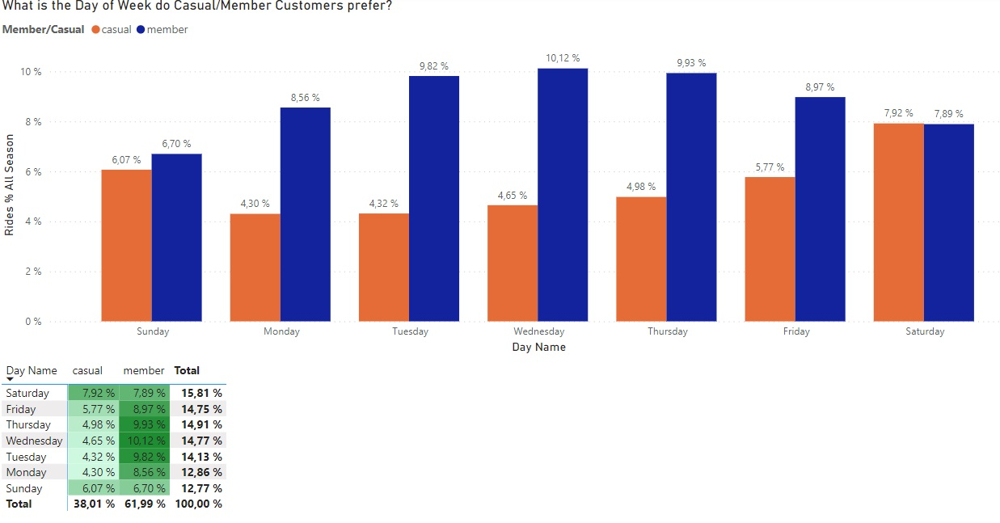
The most popular days for rides among Casual Riders are Saturday and Sunday, while Wednesday is the most popular day for Member Riders. Member riders are more consistent throughout the week.
Act
- Begin a marketing campaign promoting membership in March.
- Offer customized membership options specifically for weekends.
- Pair custom membership options with other entertainment offerings along the Chicago Lakefront Trail.
- Concentrate your marketing efforts along the Chicago Lakefront Trail.
- Create special offers for Docker memberships.
- Introduce a night-time special offer for electric bike rentals.
- Morning special offer to attract people to ride to work with the help of bikes.